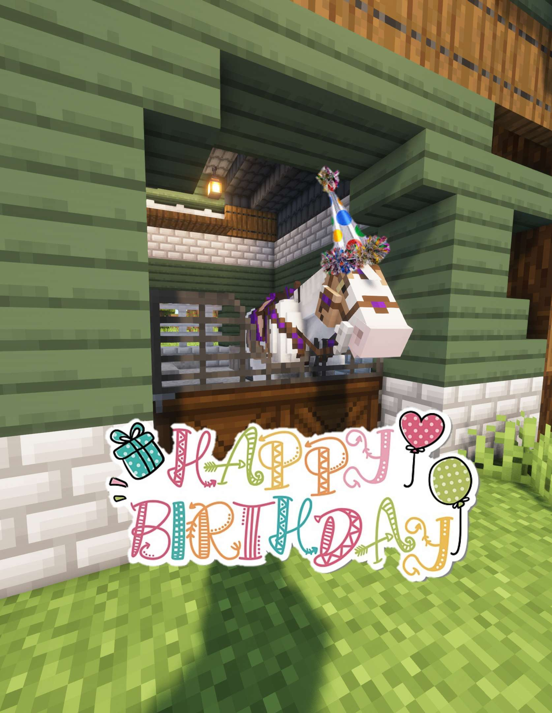

For Marie
Heyyy carrot cake, I just wanna wish you a Happy Birthday! i hope you have a great day today and have a yummy birthday dinner :p you're such a wonderful friend honestly, i love you so much!
Also! i know you don't really like the idea of getting older, so i wanted to write some reasons why it'll be ok!
The feeling of being behind & a disappointment
I know you don't like the idea of getting older, i don't either, but! i just wanna remind you that you're still on good pace in life, it might seem slow, however, thats because people are too harsh on you and you have a lot of pressure. You are not a disappointment and like i've said before, im very proud of you and i do feel like you've had growth as a person since i met you, which is great! I just hope you let down on comparing yourself to others, the majority of people feel like us, it'll be ok!
Arbitrarily "losing value"
i know another reason you don't like the idea of getting older is because of the stigma that "women lose value when they get older!" and what i wanna say in regards to that is maybe if the only value you see a women as is a breeding machine, maybe you could argue it, but for me and any normal person its simply not true. You're a very good and caring person with so much value, as a partner, friend and more, and in my eyes you'll always be the most valuable. You're so sweet, beautiful, kind, understanding and you are a great listener too ❤️ and all those things will apply at any age. you're just a great person and it makes me happy somebody like you can receive all my love and affection
So, yeah. Happy Birthday again, I'll be happy to be around for the 24th too! It's been great being your friend and I really hope this makes you smile, you have a beautiful smile.